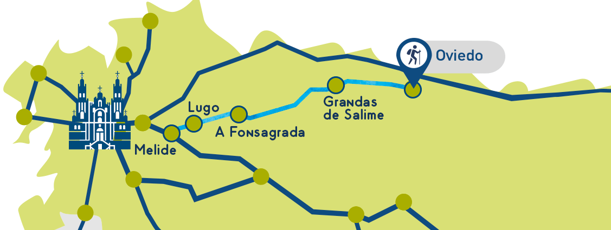
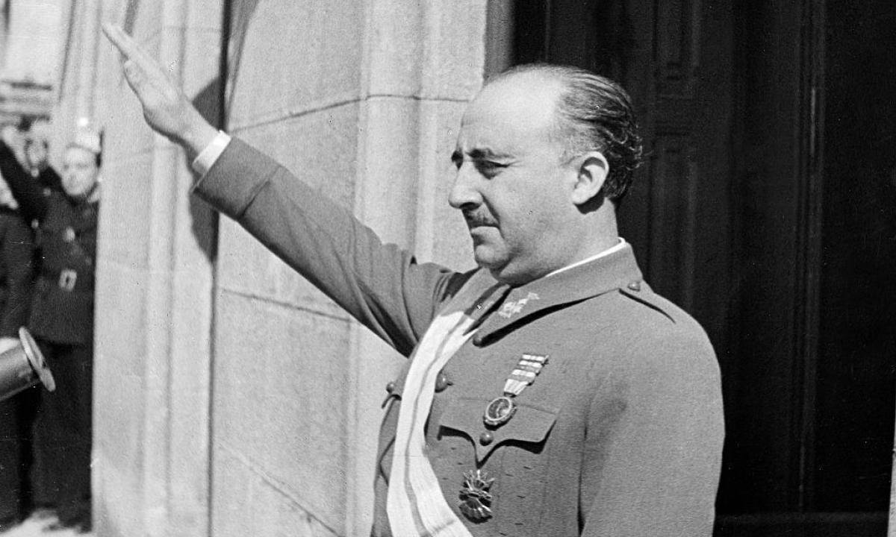
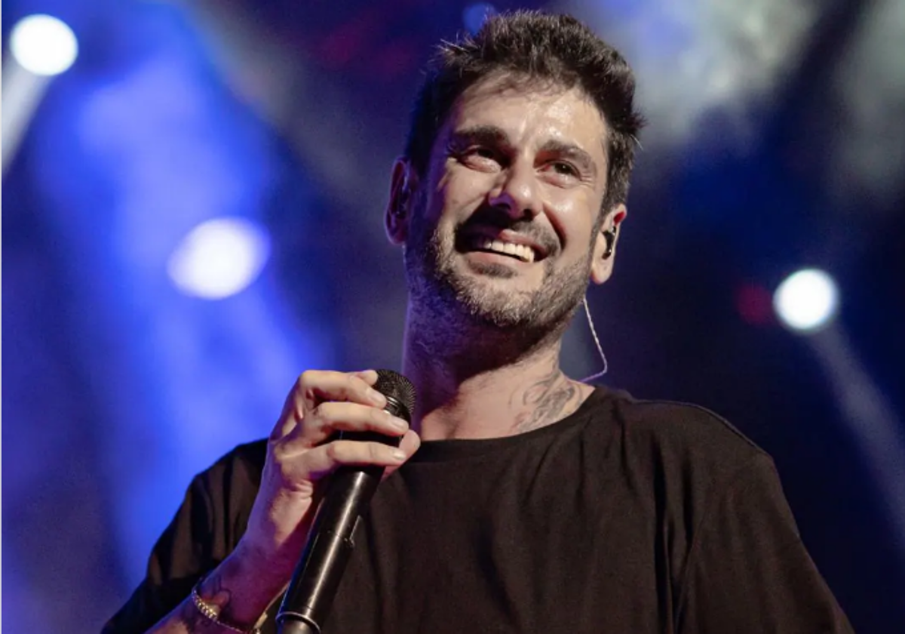
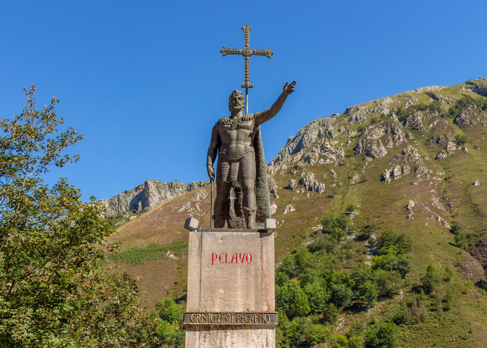
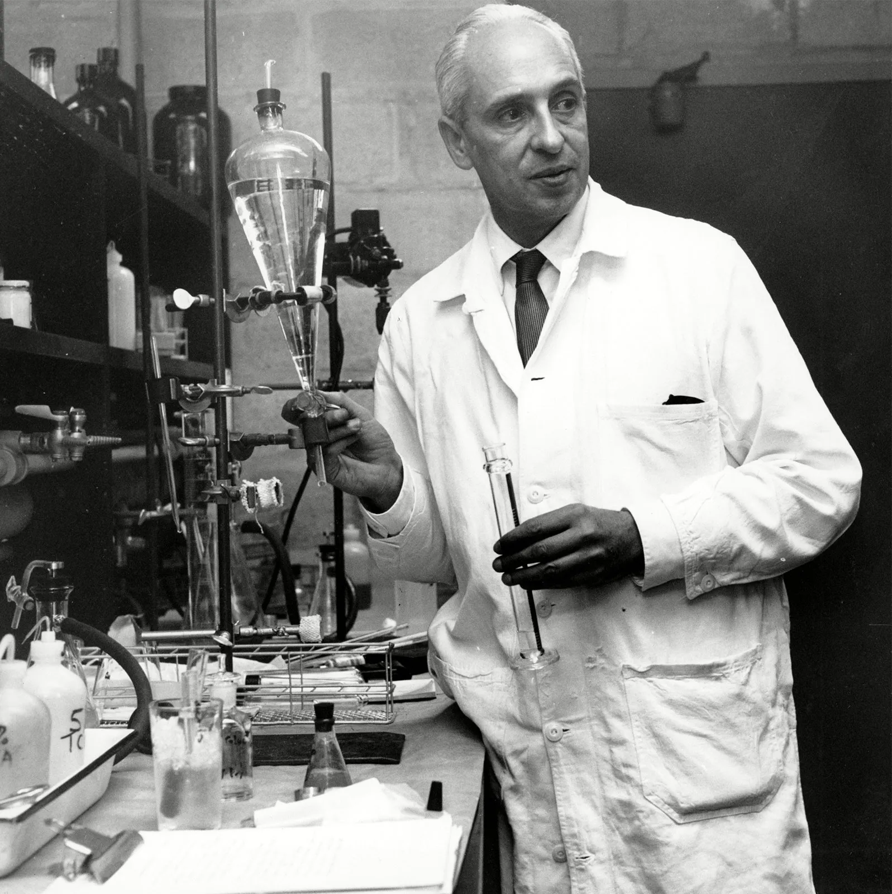

The Beginning of Asturias and Oviedo

During the year 720, the whole Iberian peninsula was occupied by the Moors,
except for a small region on the north, which would later create the Kingdom of Asturias.
The original name of Oviedo (capital of the Kingdom) was "Ovetum" and the first records of it date back to the middle ages,
around the 8th century, probably founded in the year 762. This capital would later be moved to other cities like Leon and later Toledo.
This north region contained the poorest cities of the peninsula, so it was not deemed as a threat by the Moors.
In 722, with the battle of Covadonga (beautiful place also in Asturias), the Reconquista started.
This was a series of conflicts between the Christians and Muslims,
ending in Granada (the south of Spain) in 1492, with the Christians reclaiming the peninsula.
The Reconquista was one of the most important periods in our country's history, and the presence of the Muslim culture left us amazing architecture and traditions.
St. James' Way (El Camino de Santiago)

The so called "Camino Primitivo" (or "Original Way") is the oldest path of the "Camino de Santiago".
This "original way" is over 300km long, starting from the El Salvador cathedral in Oviedo, which was once a very importante pilgrimage destination.
It was first used by Asturians in the 9th century, inagurated by King Alfonso III. Since then, there are 5 different official routes to follow, as well as many unofficials.
The Camino is visited by over 400.000 turists every year, and it takes you along beautiful countryside, old roman cities like Lugo, and gastronomy-rich regions.
For many, it is a very rewarding experience, even if you don't do it for religious reasons, most people have a positive outcome. It is said to help you copnnect with yourself or others who keep you company during the Way.
The Way crosses two autonomous communities, Asturias and then Galicia. The second being known as the part of Spain with the most mitology and lengends, with different mystic character following you along the way.
We won't get too much into detail, just know that if you are lost in the mountains of northern spain at night and hear some bells, don't look back!
Oviedo during the dictatorship

During the years 1939 to 1975, Spain was under the dictatorship of Francisco Franco (whose wife was from Oviedo),
following the end of a Civil war between republicans and franquists.
Oviedo witnessed importante battles during the Civil War, the most important being the Battle of Oviedo(1936),
it lasted months and destroyed most of the city, which was later re-build under the dictator mandate.
Like in the rest of Spain, people not affiliated to the Regimen were persecuted, which led to many incarcerations and executions,
as well as countless exiles.
The dictatorship caused a economic decline in fields like mines, very important in Asturias, and gave more importance to the
traditional agrarian lifestyle.
Following Francos death in 1975, Oviedo and the rest of the country, experienced a slow transition to a democracy and
parliamentary monarchy.
Famous people through history
Here you will find some famous people who were born or lived in Oviedo:
|
Fernando Alonso Diaz (1981-) Considered one of the best pilots in the world, Alonso was born in Oviedo and has won twice the Formula 1 world championship, in 2005 and 2006. He has also competed in Le Mans and the 500 miles of Indianapolis. He even has his own street in Oviedo where his childhood home was. As well as a museum, which we will talk about in our What To Do section. He is a very beloved celebrity by the spanish public. |

|
|
Queen Letizia of Spain (Letizia Ortiz) (1972-) Letizia was born in Oviedo in Oviedo y 1972, and in 2004 married the then prince of Spain, Felipe VI of Spain. In 2014, they became king and queen of Spain following the coronation of Felipe. She is the first wife of a spanish king to not come from royalty. |

|
|
Ramón Melendi Espina (Melendi) (1979-) Popular Spanish singer and songwriter known for his fusion of flamenco, rock, pop, and rumba styles. Rising to fame in the early 2000s, his catchy lyrics and unique voice have made him a prominent figure in Spanish music. His hits include "Caminando por la Vida" and "Tu Jardín con Enanitos". |
 |
|
King Pelayo (718-737) Nobleman and military leader, credited with founding the Kingdom of Asturias in northern Spain. He is best known for leading the Christian resistance against the Moors at the Battle of Covadonga (722), which marked the beginning of the Reconquista, which we taked about briefly in the beginning of this page. |
 |
|
Severo Ochoa (1905–1993) A Spanish-American biochemist and molecular biologist who won the Nobel Prize in Physiology and Medicine in 1959. He was recognized for his discovery of the enzyme that enables the synthesis of RNA. Although not born in Oviedo but in a smaller town in Asturias, he became a pioneer in genetics and molecular biology, leaving a lasting legacy in science. |
 |